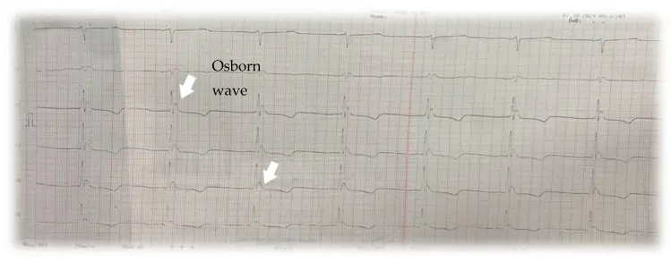

DX.9 — Avalanche
Le sigle ARVA correspond à « appareil de recherche de victimes d'avalanche ». Le sigle ATC correspond à « classification anatomique, thérapeutique et chimique ». Le sigle ATLS correspond à « soutien vital avancé du traumatisé ». Le sigle CIM-11 correspond à « classification internationale des maladies, 11e révision ». Le sigle CK correspond à « créatine kinase ». Le sigle CPR correspond à « réanimation cardio-pulmonaire ». Le sigle DFGe correspond à « débit de filtration glomérulaire estimé ». Le sigle DCI correspond à « dénomination commune internationale ». Le sigle ECG correspond à « électrocardiogramme ». Le sigle ECLS correspond à « assistance circulatoire et respiratoire extracorporelle ». Le sigle ECMO correspond à « oxygénation extracorporelle par membrane ». Le sigle ERC correspond à « Conseil européen de réanimation ». Le sigle FAST correspond à « échographie ciblée du traumatisé ». Le sigle FC correspond à « fréquence cardiaque ». Le sigle FR correspond à « fréquence respiratoire ». Le sigle FV correspond à « fibrillation ventriculaire ». Le sigle GCS correspond à « échelle de Glasgow ». Le sigle HOPE correspond à « score de pronostic de l'hypothermie après assistance extracorporelle (Hypothermia Outcome Prediction after ECLS) ». Le sigle HT correspond à « stade d'hypothermie du système suisse (HT I à HT IV) ». Le sigle ICAR MedCom correspond à « commission internationale de médecine de secours en montagne ». Le sigle IRM correspond à « imagerie par résonance magnétique ». Le sigle LAA correspond à « loi fédérale sur l'assurance-accidents ». Le sigle LAMal correspond à « loi fédérale sur l'assurance-maladie ». Le sigle OPAS correspond à « ordonnance sur les prestations de l'assurance des soins ». Le sigle PA correspond à « pression artérielle ». Le sigle PAM correspond à « pression artérielle moyenne ». Le sigle Rega correspond à « Garde aérienne suisse de sauvetage ». Le sigle ROSC correspond à « reprise d'une circulation spontanée ». Le sigle SLF correspond à « Institut fédéral pour l'étude de la neige et des avalanches ». Le sigle SpO2 correspond à « saturation pulsée en oxygène ». Le sigle TDM correspond à « tomodensitométrie (scanner) ». Le sigle TP correspond à « taux de prothrombine ». Le sigle AIPS correspond à « base suisse des informations sur les médicaments ». Le sigle IQR correspond à « intervalle interquartile ». Le sigle CHUV correspond à « Centre hospitalier universitaire vaudois ». Le sigle SI correspond à « système international d'unités ». Le sigle PEA correspond à « activité électrique sans pouls ». Le sigle ICAR correspond à « Commission internationale de sauvetage alpin ». Le sigle RCP correspond à « réanimation cardio-pulmonaire ». Le sigle QRS correspond à « complexe de dépolarisation ventriculaire à l'ECG ». Le sigle FA correspond à « fibrillation auriculaire ». Le sigle PaO2 correspond à « pression partielle artérielle en oxygène ». Le sigle PaCO2 correspond à « pression partielle artérielle en dioxyde de carbone ».
1. Définition et sémantique
Une avalanche est un glissement rapide d'une masse de neige sur une pente. Elle est un accident de montagne, pas une maladie. Elle cause une hypothermie quand la victime est ensevelie2,6.
Trois mécanismes tuent : l'asphyxie (65 à 100 % des décès), le traumatisme (5 à 29 %) et l'hypothermie (0 à 4 %)2.
Causes externes de morbidité et de mortalitéCIM-11Lésions et décès dus à une cause extérieure.
- Forces de la nature et accidents de montagneCette catégorie rassemble les événements naturels : froid, neige et foudre.
- Accidents de transportCette catégorie rassemble les accidents impliquant un véhicule ou un moyen de transport.
- ChutesCette catégorie rassemble les chutes de plain-pied ou de hauteur.
- Exposition à des forces mécaniques inaniméesChoc ou écrasement par un objet ou une machine.
- Noyade et submersion accidentellesCette catégorie rassemble les décès et les lésions par immersion dans l'eau.
- Intoxication accidentelleExposition involontaire à un toxique ou à un médicament.
- AgressionCette catégorie décrit une lésion infligée par une autre personne.
- Lésion auto-infligée intentionnelleLésion qu'une personne s'inflige volontairement.
Forces de la nature et accidents de montagneCIM-11Cette catégorie rassemble les événements naturels : froid, neige et foudre.
- Avalanche
- Exposition au froid naturel excessifFroid ambiant sans ensevelissement, cause d'hypothermie ou d'engelure.
- Exposition à la chaleur naturelle excessiveChaleur ambiante, cause de coup de chaleur.
- FoudroiementDécharge électrique atmosphérique.
- Inondation et tempêteEau, vent ou cataclysme météorologique.
- Séisme et éruption volcaniqueCette catégorie rassemble les mouvements telluriques et volcaniques.
Avalancheensevelissement par la neige
- Asphyxie par ensevelissement
- Traumatisme de l'avalanche
- Hypothermie accidentelle
Le type d'ensevelissementUne victime non ou partiellement ensevelie a une mortalité de 4,2 %372. Une victime complètement ensevelie a une mortalité de 52,4 % (Suisse 1981–1998)372. Après un ensevelissement d'au moins 60 minutes, 19 % des victimes survivent (1997–2018)3,6. pèse sur la survie. Les stades suisses de l'hypothermieLe stade HT I correspond à 35–32 °C : la victime est consciente et frissonne7. Le stade HT II correspond à 32–28 °C : la conscience se trouble et les frissons cessent7. Le stade HT III correspond à 28–24 °C : la victime est inconsciente, mais ses signes vitaux persistent7. Le stade HT IV correspond à moins de 24 °C : la mort est apparente7. guident la conduite. Les notions voisinesUn arrêt asphyxique survient quand l'asphyxie arrête le cœur avant le froid ; le pronostic est très sombre. Un arrêt hypothermique primaire survient quand le froid arrête le cœur d'abord ; une réanimation prolongée avec ECLS peut réussir2. orientent la réanimation.
2. Épidémiologie (Suisse, puis Europe)
En Suisse, le SLFInstitut fédéral pour l'étude de la neige et des avalanches. compte 656 décès dans 512 accidents mortels en 30 ans, soit 22 par an (SLF 2025)9. Le SLF, à Davos, tient le registre suisse des accidents9. L'avalanche cause 4,8 % des 439 hypothermies adultes de l'Inselspital (Habegger 2022)1. Parmi 140 ensevelis au moins 60 minutes, 19 % survivent (Eidenbenz 2021)3, mais seulement 3 % des 147 arrêts traités par Rega (Knapp 2025)4. La prévention repose donc sur le bulletin d'avalanches et sur l'airbagSac gonflable qui garde la victime en surface. Il réduit le risque d'ensevelissement critique., dont l'effet reste débattu (Di Stefano 2023)10.
| Mesure (unité dans le libellé) | Parmi les 21 victimes d'avalanche | Comparaison avec le reste de la cohorte de 439 patients |
|---|---|---|
| Part des avalanches parmi les causes, cumulables (%) | 4,8 (21/439)1 | Adultes ≤ 35 °C, Inselspital, 2000–20191 |
| Part d'hommes (%) | 85,7 | Cohorte entière : 38,0 % de femmes1 |
| Âge médian (années) | 38 (IQR 33–48)1 | Causes médicales : 65 ans ; neurologiques : 75 ans1 |
| Température médiane à l'admission (°C) | 28,4 (IQR 26,0–31,4)1 | Intoxication ou cause médicale : 32,2 °C1 |
| Mortalité hospitalière (%) | 61,916 | Cohorte entière : 22,3 %16 |
| Mesure (unité dans le libellé) | Résultat observé | Population étudiée |
|---|---|---|
| Survie à 60 minutes d'ensevelissement (%) | 233 | Suisse, 140 victimes ensevelies au moins 60 minutes, 1997–20183 |
| Survivants parmi les ensevelis au moins 60 minutes (%)3 | 19 (27/140)3 | Mêmes 140 victimes |
| Survie à 1 400 minutes d'ensevelissement (%)3 | moins de 63 | Mêmes 140 victimes |
| Profondeur médiane chez les décédés (cm) | 1003 | Mêmes 140 victimes (comparaison avec 70 cm chez les survivants)3 |
| Profondeur médiane chez les survivants (cm) | 703 | Mêmes 140 victimes |
| Déclarées mortes sans réanimation (%) | 344 | Rega, 147 victimes en arrêt, 2010–20244 |
| Réanimation débutée (%) | 664 | Mêmes 147 victimes |
| Pouls retrouvé (%) | 134 | Mêmes 147 victimes |
| Survie à la sortie de l'hôpital (%) | 34 | Mêmes 147 victimes |
3. Physiopathologie
L'avalanche tue d'abord par asphyxie, puis par traumatisme, rarement par le froid seul. Le froid ne peut agir que si la victime respire encore sous la neige2.
Amorce (étape tissulaire). La neige comprime le thorax, puis elle obstrue la bouche et le nez. Sans poche d'air, elle réinhale son propre gaz expiré. Le dioxyde de carbone monte, l'oxygène baisse2,6.
Développement (étape moléculaire et cellulaire). L'hypoxie bloque la production d'énergie des cellules. Le potassium sort des cellules lysées et il s'accumule dans le sang. L'acidose lactique s'installe. Un potassium élevé trahit donc une asphyxie ancienne, non un refroidissement5.
Installation (étape clinique). Si l'air persiste, le corps se refroidit lentement dans la neige. Les frissons cessent vers 32 °C, la conscience baisse, le cœur ralentit7. Sous 30 °C, la fibrillation ventriculaire ou l'asystolie apparaissent7.
Maintien (étape systémique). Le froid protège le cerveau et le cœur en réduisant leur consommation d'oxygène. Cela explique les survies après arrêt prolongé, à condition que l'arrêt soit d'origine hypothermique2.
Le traumatismeFractures, hémorragie, lésion crânienne ou rachidienne causées par le choc contre les rochers, les arbres ou par l'entraînement dans la neige. associe hémorragie et froid : l'hypothermie aggrave la coagulopathie. Le collapsus de réchauffementChute de pression au réchauffement : les vaisseaux se dilatent, la volémie effective baisse, le froid avait masqué l'hypovolémie. menace après le sauvetage7.
| Lésion ou perturbation | Exploration qui la montre | Thérapeutique qui la corrige (mécanisme) |
|---|---|---|
| Obstruction des voies aériennes par la neige | Neige dans la bouche ou la gorge ; SpO2 basse | Aspiration et libération des voies aériennes : rétablit la ventilation. |
| Asphyxie sans poche d'air | Durée d'ensevelissement ; gaz du sang | Insufflations puis massage : rendent l'oxygène avant l'arrêt définitif. |
| Hypoxie cellulaire et lyse | Potassium, lactate, pH | Aucun traitement ne corrige la lyse : le potassium sert à trier. |
| Hypothermie (perte de chaleur) | Température centrale ; ECG (onde J, bradycardie) | Isolation, réchauffement actif, ECLS : apportent de la chaleur sans surcharger le cœur. |
| Fibrillation ventriculaire sous 30 °C7 | ECG | Compressions continues et réchauffement : le cœur froid répond mal aux chocs. |
| Hémorragie et fractures | FAST, scanner, hémoglobine | Hémostase et immobilisation : stoppent la perte de sang et de chaleur. |
| Rhabdomyolyse, syndrome de loge | CK, créatinine, urines foncées | Hydratation et surveillance rénale : évitent l'insuffisance rénale. |
4. Démarche diagnostique
Ordre des étapes : la sécurité d'abord, puis la durée d'ensevelissement, puis la température. Les décisions de réanimation dépendent de ces trois éléments.
Étape 1. Drapeaux rouges : chacun impose l'urgence.
🚩 R1. Absence de signes de vie à l'extractionPas de respiration, pas de mouvement, pas de pouls palpable en 60 secondes2. Il faut décider entre asphyxie et arrêt hypothermique selon la durée et la poche d'air. : démarrer la réanimation selon l'algorithme du point 102.
🚩 R2. Voies aériennes obstruées par la neigeNeige ou glace dans la bouche ou la gorge : l'asphyxie est la cause probable. Après 60 minutes sans signe de vie et sans température mesurable, la réanimation n'est pas entreprise. : dégager la bouche, ventiler2.
🚩 R3. Ensevelissement de 35 minutes ou plusAprès 35 minutes, la survie chute et le froid devient un enjeu majeur : manipuler avec douceur et isoler du froid. : monitorage ECG et température6.
🚩 R4. Température centrale sous 30 °CRisque élevé de fibrillation ventriculaire ou d'asystolie : toute secousse peut déclencher l'arrêt. : manipulation horizontale, centre disposant de l'ECLS6.
🚩 R5. Traumatisme grave associéLésion crânienne, rachidienne, thoracique ou hémorragique : l'hypothermie aggrave le saignement. : suivre l'ATLS, hémostase, TDM corps entier1.
🚩 R6. Instabilité hémodynamique ou arythmieBradycardie, fibrillation auriculaire, hypotension : le cœur froid est irritable et se décompense au réchauffement. : voie veineuse, ECG continu, avis du centre ECLS.
🚩 R7. Danger persistant sur le siteNouvelle coulée ou zone instable : les secouristes risquent à leur tour un ensevelissement. : sécuriser le site avant tout geste6.
Étape 2. Sans urgence immédiate : étapes graduelles.
On sécurise d'abord le site et on alerte Rega (1414)6. On établit l'heure et la durée d'ensevelissement. On cherche les signes de vie et la poche d'air. On mesure la température centrale. On pose un ECG. On cherche un traumatisme. En milieu hospitalier, on dose le potassium, les gaz du sang et le lactate5.
Chaque diagnostic dangereux a son signe qui tranche, que le tableau suivant résume. La neige dans la bouche signe l'asphyxie. Une température centrale sous 30 °C fait suspecter un arrêt hypothermique2. Un potassium au-dessus du seuil indique une lyse cellulaire, donc une réanimation vaine5. Le piège est qu'un corps froid et pâle n'est pas un corps sans espoir2,5.
| Diagnostic | Élément qui tranche | Piège | Conduite si le résultat est positif |
|---|---|---|---|
| Asphyxie par ensevelissement | Voies aériennes obstruées par la neige, sans poche d'air ; ensevelissement de 60 minutes ou moins2 | Une bouche libre ne prouve pas une poche d'air2 | Insufflations dès que possible, puis réanimation ; pas de réanimation après 60 minutes avec voies obstruées et température non mesurable2 |
| Arrêt hypothermique primaire | Voies libres et ensevelissement de plus de 60 minutes, ou température centrale sous 30 °C2 | Un corps froid, pâle, à pupilles dilatées, n'est pas mort tant qu'il n'est pas réchauffé2 | Réanimation continue et transport vers un centre ECLS2,4 |
| Traumatisme grave associé | Hypotension avec tachycardie, épanchement à la FAST, déformation ou mobilité anormale | La bradycardie hypothermique masque le choc hémorragique | ATLS, hémostase et TDM corps entier1 |
| Syndrome post-sauvetage | Chute de température après le sauvetage, hypotension au réchauffement, urines foncées et CK élevée7 | Le froid masque l'hypovolémie, que le réchauffement dévoile7 | Monitorage continu, remplissage, surveillance rénale7 |
5. Anamnèse ciblée et drapeaux rouges
Les témoins et le sauveteur répondent. Chaque question peut changer la décision de réanimation ou de transport.
| Question | Pourquoi elle change la décision |
|---|---|
| Quelle est la durée d'ensevelissement ?Heure du déclenchement et heure du dégagement. C'est le facteur pronostique principal. | Moins de 60 minutes : asphyxie présuméeLe cœur s'arrête par manque d'oxygène : l'air sous la neige manque très vite.2. Plus de 60 minutes : arrêt hypothermique possible2. |
| La victime avait-elle une poche d'air ?Espace libre devant le visage, creusé par la victime ou formé par la neige. | Poche d'air : respiration possible et refroidissement lentLa neige isole ; le corps perd sa chaleur en plusieurs heures si la victime respire.. Absence : asphyxie rapide. |
| Les voies aériennes étaient-elles dégagées à l'extraction ? | Bouche pleine de neige : asphyxie probable, pas de réanimation après 60 minutes sans température mesurable2. |
| Y avait-il des signes de vie à l'extraction ? | Des signes de vie à l'extraction sont fortement associés à la survie5. |
| Quelle était la profondeur d'ensevelissement ? | Plus de 100 cm chez les décédés (70 cm chez les survivants) : l'épaisseur limite l'air3. |
| La victime a-t-elle roulé, heurté un obstacle ? | Traumatisme crânien, rachidien, thoracique ou hémorragique probable. |
| Antécédents, médicaments, alcool, drogues ? | Intoxication et maladie aggravent le froid ; un anticoagulant aggrave le saignement. |
| Combien de victimes, quel équipement (ARVA, airbag, pelle) ? | Plusieurs victimes imposent un tri ; l'airbag réduit l'ensevelissement critique. |
| Combien de temps la victime est restée en surface après le dégagement ? | Le froid continue : la température peut baisser de 1,9 °C en moyenne entre le site et l'hôpital4. |
Drapeaux rouges actionnables : urgence, imagerie, avis spécialisé.
| Drapeau rouge | Signification | Action immédiate |
|---|---|---|
| Aucun signe de vie, ensevelissement de 60 minutes ou plus, voies aériennes libres | Arrêt hypothermique primaire probable | Urgence vitale : réanimation, transport vers un centre ECLS, avis du centre avant l'arrivée2 |
| Température centrale mesurée sous 30 °C, voies libres, sans signe de vie | Arrêt hypothermique possible, quelle que soit la durée | Réanimer quelle que soit la durée2 |
| Corps gelé ou lésion manifestement mortelle | Mort certaine | Ne pas réanimer3 |
| Traumatisme crânien, rachidien ou hémorragique suspecté | Hémorragie ou lésion neurologique associée | TDM corps entier, immobilisation, avis du traumatologue |
| Arythmie ou hypotension sous réchauffement | Cœur froid irritable, collapsus de réchauffement | Monitorage et avis du réanimateur7 |
6. Examen physique ciblé, région par région
Le normal vient d'abord, le pathologique ensuite. Chaque geste respecte la douceur : toute manipulation brutale d'un cœur froid peut déclencher une fibrillation ventriculaire.
| Région | Normal attendu | Signes pathologiques (cliquer pour technique, valeur, piège) |
|---|---|---|
| 1. Constantes | Température centrale 36,5–37,5 °C ; FC 60–100/min ; FR 12–20/min ; SpO2 ≥ 94 %7. | Température centrale < 35 °CTechnique : sonde œsophagienne (référence), rectale ou vésicale ; le tympanique est peu fiable au froid7. Valeur : définit l'hypothermie et le stade HT. Piège : seulement 5,7 % des mesures de la cohorte bernoise sont œsophagiennes. ; Bradycardie et hypotensionTechnique : compter le pouls carotidien pendant 60 secondes, brassard adapté7. Valeur : réponse physiologique au froid. Piège : un pouls très lent n'est pas un arrêt. ; SpO2 basse ou indosableTechnique : oxymètre sur doigt chaud, ou sur lobe d'oreille. Valeur : hypoxie. Piège : la vasoconstriction fausse la mesure. |
| 2. Voies aériennes, tête et cou | Bouche libre, trachée médiane, conscience claire (GCS 15), pupilles réactives7. | Neige ou glace dans la boucheTechnique : ouvrir la bouche, inspecter à la lampe, aspirer. Valeur : voie aérienne obstruée, asphyxie. Piège : une bouche libre ne prouve pas une poche d'air2. ; GCS abaisséTechnique : ouverture des yeux, réponse verbale et motrice. Valeur : stade HT II ou III, hypoxie ou lésion crânienne. Piège : le froid seul abaisse la conscience. ; Douleur cervicale ou déficit moteurTechnique : palper le rachis cervical sans le mobiliser, tester la force des quatre membres. Valeur : lésion rachidienne. Piège : l'hypothermie masque la douleur. |
| 3. Thorax | Expansion symétrique, murmure vésiculaire des deux côtés, thorax compressible. | Asymétrie ou crépitation thoraciqueTechnique : palper les côtes, ausculter les deux champs. Valeur : fracture costale, pneumothorax. Piège : l'hypothermie réduit la douleur. ; Thorax non compressibleTechnique : essayer la compression ; le sternum ne s'enfonce pas. Valeur : neige tassée ou thorax rigide, massage inefficace chez la victime en arrêt. Piège : décrit en série de cas seulement14. |
| 4. Cœur | Rythme régulier, ECG sans onde J, sans arythmie. | Onde J d'Osborn, fibrillation auriculaire, bradycardieTechnique : ECG à 12 dérivations, filtre musculaire éteint14. Valeur : signes d'hypothermie, onde J sous 32 °C14. Piège : l'onde J n'est pas spécifique. ; Fibrillation ventriculaire ou asystolieTechnique : monitorage continu. Valeur : arrêt cardiaque. Piège : un tracé plat sur un corps froid impose d'évaluer la réanimation selon l'algorithme du point 10. |
| 5. Abdomen et bassin | Abdomen souple, bassin stable à la compression douce. | Défense abdominale, bassin instableTechnique : palper les quatre quadrants, compresser doucement les crêtes iliaques une seule fois. Valeur : hémorragie intra-abdominale ou pelvienne. Piège : la rigidité du froid imite une défense1. |
| 6. Membres et peau | Peau rose et chaude, pouls périphériques présents, pas de fracture. | Déformation, plaie, loge tendueTechnique : inspecter, palper les loges, rechercher douleur à l'étirement. Valeur : fracture, syndrome de loge, rhabdomyolyse. Piège : ischémie masquée par le froid. ; EngeluresTechnique : inspecter doigts, orteils, nez, oreilles ; peau blanche, dure, insensible. Valeur : gelure. Piège : ne pas frotter, ne pas réchauffer si le regel est possible. |
| 7. Neurologie | Frissons présents, conscience claire, force symétrique. | Absence de frissonsTechnique : observer le patient et palper le trapèze. Valeur : température sous 32 °C environ (HT II ou plus)7. Piège : l'épuisement des réserves supprime aussi les frissons. ; Pupilles dilatées et fixesTechnique : lampe, comparer les deux côtés. Valeur : non fiable pour décider d'arrêter. Piège : la mydriase ne contre-indique pas la réanimation d'une victime hypotherme7. |
7. Approche syndromique
Cinq syndromes sont décrits. Chacun des cinq syndromes de l'avalanche sépare signes fonctionnels (rapportés) et signes physiques (trouvés). Le geste de recherche et le mécanisme se lisent en regard.
7.1 Le syndrome d'asphyxie associe hypoxie, hypercapnie et perte de conscience
| Type | Signe et définition | Geste de recherche | Mécanisme |
|---|---|---|---|
| Fonctionnel | DyspnéeSensation de manquer d'air, rapportée par la victime consciente. | Demander si l'air manquait sous la neige. | Hypercapnie et hypoxie stimulent les centres respiratoires. |
| Physique | CyanoseColoration bleutée des lèvres et des ongles. | Inspecter lèvres et lits unguéaux à la lumière. | Hémoglobine désaturée. |
| Physique | Apnée ou gaspsAbsence de respiration ou respirations agoniques isolées. | Observer le thorax 10 secondes7. | Dépression du centre respiratoire par hypoxie sévère. |
| Physique | SpO2 basseSaturation sous 90 %7. | Oxymètre sur doigt chaud. | Obstruction et compression thoracique. |
7.2 Le syndrome hypothermique suit les stades suisses HT I à HT IV
| Type | Signe et définition | Geste de recherche | Mécanisme |
|---|---|---|---|
| Fonctionnel | Sensation de froid, fatiguePlaintes de HT I : froid intense, frissons, maladresse. | Interroger la victime consciente. | Activation thermorégulatrice. |
| Physique | FrissonsTremblements musculaires qui produisent de la chaleur ; stade HT I. | Observer, palper le trapèze. | Thermogenèse musculaire ; cesse vers 32 °C7. |
| Physique | Confusion, somnolenceTroubles de conscience : stade HT II. | Poser des questions simples, mesurer le GCS. | Baisse du métabolisme cérébral. |
| Physique | Bradycardie, onde JRythme lent et onde positive après le QRS. | ECG, pouls carotidien 60 secondes7. | Ralentissement du nœud sinusal par le froid. |
| Physique | Coma avec signes vitauxStade HT III : inconscience, pouls et respiration présents. | GCS, palpation du pouls, capnographie. | Dépression nerveuse et cardiaque profonde. |
7.3 Le syndrome traumatique révèle les lésions de l'entraînement
| Type | Signe et définition | Geste de recherche | Mécanisme |
|---|---|---|---|
| Fonctionnel | Douleur localiséeDouleur thoracique, abdominale, rachidienne ou d'un membre. | Demander la localisation, l'intensité. | Lésion tissulaire par choc. |
| Physique | Déformation et mobilité anormaleSigne de fracture. | Inspecter et palper sans mobiliser. | Rupture osseuse. |
| Physique | Hypotension avec tachycardieSigne de choc hémorragique ; absent si la bradycardie hypothermique domine. | PA et pouls répétés, FAST. | Perte de volume sanguin. |
7.4 Le syndrome d'arrêt cardiaque impose de distinguer asphyxie et hypothermie
| Type | Signe et définition | Geste de recherche | Mécanisme |
|---|---|---|---|
| Physique | Absence de pouls et de respirationArrêt cardio-respiratoire clinique. | Pouls carotidien pendant 60 secondes avec ECG7. | Asystolie, FV ou PEA. |
| Physique | Poche d'air présenteEspace libre devant la bouche à l'extraction. | Interroger les sauveteurs. | Respiration sous la neige : arrêt plutôt hypothermique. |
| Physique | Potassium élevéSeuil de 7 mmol/L dans les cohortes d'avalanche7. | Prélèvement à l'arrivée. | Lyse cellulaire par hypoxie prolongée. |
7.5 Le syndrome post-sauvetage apparaît pendant le réchauffement
| Type | Signe et définition | Geste de recherche | Mécanisme |
|---|---|---|---|
| Physique | Chute de température après le sauvetageLe sang froid des extrémités revient au centre ; la température centrale baisse encore (afterdrop). | Température centrale toutes les 5 à 10 minutes7. | Redistribution de la chaleur. |
| Physique | Hypotension au réchauffementCollapsus de réchauffement. | PA continue, lactate. | Vasodilatation sur hypovolémie masquée. |
| Physique | Urines foncées, CK élevéeRhabdomyolyse. | Bandelette urinaire, CK. | Destruction musculaire par compression et froid. |
8. Diagnostic positif et critères
Aucune société savante ne propose de critères majeurs et mineurs. Le diagnostic est clinique et thermique : température centrale inférieure à 35 °C chez une victime d'avalanche1,7.
| Stade | Température centrale (°C) | Clinique | Conduite |
|---|---|---|---|
| HT I | 35–32 °C | Conscient, frissons | Réchauffement externe, boissons chaudes sucrées |
| HT II | 32–28 °C | Conscience troublée, sans frissons | Réchauffement actif, monitorage, hôpital |
| HT III | 28–24 °C | Inconscient, signes vitaux présents | Centre avec ECLS, intubation si nécessaire |
| HT IV | < 24 °C | Mort apparente | Réanimation, ECLS selon l'algorithme |
On présume un arrêt hypothermique primaire si les voies aériennes sont libres et si l'ensevelissement dépasse 60 minutes ou la température est inférieure à 30 °C2.
Ce qui ne suffit pas : la rigidité, la pâleur, la mydriase ou un tracé plat ne prouvent pas la mort. Une victime hypotherme n'est pas morte tant qu'elle n'est pas réchauffée, sauf lésion mortelle, corps gelé ou voies obstruées2,3.
Le score HOPEIl estime la survie d'un arrêt hypothermique réchauffé par ECLS. Il utilise l'âge, le sexe, le mécanisme, la durée de réanimation, le potassium et la température. aide à décider du réchauffement extracorporel8. Dans l'avalanche, un potassium de 7 mmol/L et une température de 30 °C donnent une sensibilité de 100 % pour les survivants, avec 47 % de sur-triage5.
9. Examens complémentaires
9.a Gold standard. Il n'existe pas de test unique : la mesure de la température centrale œsophagienne en est la référence.
Température centrale : indication, prescription, interprétation
Indication. Toute victime d'avalanche ensevelie plus de 35 minutes, ou frigorifiée.Prescription. Sonde œsophagienne chez le patient intubé ; à défaut sonde rectale ou vésicale. Thermomètre tympanique à basse température : peu fiable.
Limite. Les mesures périphériques surestiment la température en cas de vasoconstriction. Dans la cohorte bernoise, 64,5 % des mesures n'indiquent pas la méthode16.
| Résultat | Signification | Conduite |
|---|---|---|
| ≥ 35 °C | Pas d'hypothermie | Rechercher une autre cause |
| 32–35 °C | HT I | Réchauffement externe |
| 28–32 °C | HT II | Réchauffement actif, hôpital |
| < 30 °C avec arrêt85 | Arrêt hypothermique possible | Réanimation, centre ECLS |
| < 24 °C | HT IV | Réanimation prolongée, ECLS |
9.b Première intention.
| Examen | Valeur normale (unités SI) | Résultat anormal | Signification et conduite |
|---|---|---|---|
| ECG12 dérivations, rythme sinusal85. Indication : toute victime. Ce qu'on prescrit : ECG continu avec défibrillateur. | Rythme sinusal, 60–100/min | Onde J, bradycardie, FA, FV | Hypothermie ; FV sous 30 °C : compressions et réchauffement85. |
| Potassium sériquePrélèvement artériel ou veineux à l'arrivée d'une victime en arrêt. Il trie les patients pour l'ECLS. | 3,5–5,0 mmol/L | > 7 mmol/L (avalanche)85 | Lyse cellulaire : ECLS non indiquée. Seuil de 12 mmol/L hors avalanche5,15. |
| Gaz du sang artérielCe qu'on prescrit : pH, PaO2, PaCO2, lactate. Température du patient à saisir dans l'automate. | pH 7,35–7,45 | pH < 7,35, lactate > 2 mmol/L5 | Acidose par hypoxie ; guide le tri. |
| GlycémieBandelette immédiate. Ce qu'on prescrit : glycémie capillaire. | 3,9–5,6 mmol/L | < 3,9 mmol/L | Épuisement des réserves : corriger1. |
| Échographie FASTAu lit, 4 fenêtres : péricarde, deux gouttières, pelvis1. | Absence de liquide libre | Épanchement | Hémorragie : laparotomie ou TDM selon la stabilité. |
ECG d'hypothermie avec ondes d'Osborn. ECG de surface sur papier millimétré, enregistré chez un patient hypotherme.

Lisez d'abord seul ce cliché (ecg d'hypothermie avec ondes d'osborn) : cherchez vous-même le signe.
La copie annotée (ecg d'hypothermie avec ondes d'osborn) montre les repères décrits ci-dessous.
- L'onde J ne permet pas d'affirmer seule l'hypothermie, car elle n'est pas spécifique.
- Une onde J ne remplace pas la mesure de la température centrale.
Ce que l'image décide. L'onde J oriente vers une hypothermie ; la décision de réanimation et d'ECLS repose sur la température centrale et le potassium, non sur l'ECG seul.
9.c Alternatives.
| Situation | Alternative |
|---|---|
| Traumatisme stable | TDM corps entier sans délai ; IRM exclue en urgence. |
| Grossesse | Échographie d'abord ; TDM seulement si le bénéfice maternel l'exige. |
| Enfant | Échographie ; TDM à faible dose si indispensable. |
| DFGe < 30 mL/min ou allergie aux produits iodés1 | TDM sans injection ; FAST ; discuter l'angiographie. |
| Dispositif non compatible IRM | TDM ; IRM jamais en urgence d'avalanche. |
9.d Deuxième intention.
| Examen | Normal | Anormal | Conduite |
|---|---|---|---|
| CK et créatinineRhabdomyolyse après compression. Prescrire à l'arrivée et à 6 heures1. | Valeurs du laboratoire | CK très élevée, créatinine en hausse | Hydratation, surveillance rénale. |
| Coagulation, hémoglobineTP, fibrinogène, plaquettes. Les tests à 37 °C sous-estiment la coagulopathie d'un patient froid1. | TP ≥ 70 %1 | TP bas, fibrinogène bas | Réchauffement et transfusion ciblée. |
| TDM cérébrale et rachis | Absence de lésion | Hémorragie, fracture | Neurochirurgie, immobilisation. |
| Radiographie du thorax | Poumons clairs | Pneumothorax, œdème | Drainage, ventilation protectrice. |
Cas de figure : un potassium bas avec arrêt et température sous 30 °C pousse à l'ECLS5. Un potassium élevé et une asphyxie évidente arrêtent la réanimation. Un résultat limite impose le score HOPE. Un résultat discordant (température basse mais signes de vie) impose de réchauffer sans réanimer5,8.
10. Arbre décisionnel
Chaque ligne commence par la question et finit par l'action. Les graves passent d'abord.
Arbre A. Victime ensevelie, sans signe de vie.
• Si un danger persiste sur le site, on le sécurise avant tout geste.
• Si ensevelissement ≤ 60 minutes → présumer l'asphyxie : insufflations dès que possible puis réanimation, quelle que soit la perméabilité2.
• Si ensevelissement > 60 minutes, voies aériennes libres ou perméabilité inconnue → présumer l'arrêt hypothermique : réanimer sauf température mesurée qui l'exclut2.
• Si ensevelissement > 60 minutes, voies obstruées, température non mesurable → présumer l'asphyxie : pas de réanimation2.
• Si température < 30 °C, voies libres, sans signe de vie → réanimer quelle que soit la durée2.
• Si le corps est gelé ou si la lésion est mortelle, on ne réanime pas3.
• Si la réanimation a débuté, on poursuit les compressions en continu et on oriente vers un centre ECLS (potassium ≤ 7 mmol/L à l'arrivée)5.
Arbre B. Victime avec signes de vie.
• Si la température est inférieure à 30 °C ou si l'état est instable, on manipule la victime à l'horizontale et on l'oriente vers un centre ECLS7.
• Si traumatisme grave → ATLS, TDM, hémostase avant réchauffement actif.
• Si température 32–35 °C, stable → réchauffement externe et boissons chaudes7.
• Si température 28–32 °C → réchauffement actif, monitorage, hôpital7.
11. Prise en charge selon les recommandations suisses
Cadre. En Suisse, les équipes de secours suivent les schémas de l'ICAR MedCom 2023 et de l'ERC 2021, tandis que les doses viennent de l'AIPS7.
11.A But thérapeutique.
• Dégager la tête en premier et rétablir la ventilation le plus tôt possible, car la survie chute de 91 % après 18 minutes d'ensevelissement à 34 % après 35 minutes6.
• Le but est d'atteindre une température centrale supérieure à 35 °C sans arrêt cardiaque6. Le réchauffement progressif se poursuit jusqu'à cette température.
• Éviter l'arythmie, l'hypotension de réchauffement et les séquelles neurologiques.
11.B Moyens.
11.B1 Formes compliquées : urgences, dans l'ordre chronologique.
Urgence — victime ensevelie en arrêt cardiaque
1. Sur le site. Sécuriser, localiser par ARVA puis sonde. Dégager la tête et le thorax d'abord.2. Dès la tête libre. Noter l'heure de l'ensevelissement, la poche d'air, la perméabilité. Aspirer la bouche.
3. Décision. Appliquer l'arbre A du point 102.
4. Ensevelissement ≤ 60 minutes. Insufflations dès que possible, puis compressions et ventilations 30:2 (asphyxie présumée).
5. Ensevelissement > 60 minutes, voies libres. Réanimation 30:2 ; ECG, température centrale si possible.
6. Rythme. Trois chocs au maximum si la FV persiste tant que la température reste sous 30 °C ; adrénaline différée sous 30 °C7.
7. Transport. Massage mécanique continu vers un centre avec ECLS, par Rega. Intuber, isoler du froid2,4.
8. À l'hôpital. On mesure le potassium et la température centrale, puis on calcule le score HOPE, car ces valeurs orientent vers l'ECLS : chez la victime d'avalanche, le seuil retenu est de 7 mmol/L de potassium et de 30 °C, alors qu'en hypothermie hors avalanche il atteint 12 mmol/L5,7,8.
9. ECLS. Réchauffement par ECMO ou circulation extracorporelle. Dans une cohorte européenne multicentrique, 6 des 61 victimes réchauffées par ECLS survivent, soit 10 %5.
Urgence — traumatisme grave et hémorragie
1. Contrôler l'hémorragie externe. 2. Immobiliser le rachis. 3. Perfuser un soluté chauffé à 38–42 °C. 4. Transférer en centre de traumatologie. 5. TDM corps entier1,7.11.B2 Formes non compliquées : ordre du traitement.
1. Mesures générales. On manipule la victime doucement et à l'horizontale. On retire les vêtements mouillés. On l'isole du sol et du vent par une couverture et un sac de bivouac. Pourquoi : chaque mouvement brusque expose à la FV7.
2. Réchauffement. HT I : couvertures, boissons chaudes et sucrées, mouvement. HT II : réchauffement actif (air chaud pulsé, couverture chauffante), perfusion chaude. HT III–IV : centre ECLS. Pourquoi : la chaleur externe suffit tant que le cœur bat.
3. Pharmacologique. Le Ringer-Acétat-Fresenius® chauffé à 38–42 °C remplit le volume sans refroidir la victime12,7. On évite donc les perfusions froides7.
4. Arrêt cardiaque : adrénaline. La recommandation ERC 2021 diffère l'adrénaline tant que la température reste inférieure à 30 °C7. Entre 30 et 35 °C, elle double l'intervalle des doses (6 à 10 minutes)7. L'AIPS d'Adrenalin-Sintetica® autorise la voie i.v. en réanimation, à 0,5–1 mg toutes les 3 à 5 minutes11.
5. Hypotension post-réanimation. La noradrénaline (Noradrenalin-Sintetica®) corrige l'hypotension une fois le volume rétabli. L'AIPS indique une perfusion débutée à 8–12 µg/min pour 70 kg, puis une titration par paliers de 0,05 à 0,1 µg/kg/min13.
6. Non pharmacologique. On isole la victime, on l'immobilise et on la réchauffe par ECLS si nécessaire, puis on traite chirurgicalement les lésions associées. Pour les gelures, on ne frotte pas la peau et on ne réchauffe pas si un regel est possible.
7. Social et professionnel. L'avalanche est un accident : la LAA couvre les salariés, la LAMal les autres. Hors LAA, c'est l'assurance de base qui rembourse la moitié des frais de sauvetage en Suisse, au plus 5000 francs par an (OPAS art. 27)17. Le médecin fixe l'arrêt de travail selon les séquelles. Il évalue ensuite l'aptitude à la conduite après récupération.
Le tableau suivant résume les trois médicaments cités, selon leur information professionnelle suisse (AIPS).
| Molécule et spécialité® | Dose AIPS | Voie | Durée | Contre-indication majeure | Extrait AIPS |
|---|---|---|---|---|---|
| Adrénaline (Adrenalin-Sintetica® 1 mg/mL, n° 56551)11 | 0,5–1 mg, à répéter toutes les 3 à 5 minutes ; enfant 0,01 mg/kg11 | i.v., après dilution 1:10, en injection lente11 | Adaptée au besoin selon la durée de la réanimation11 | Hypersensibilité, hypertension, hyperthyroïdie, glaucome à angle fermé, maladie coronarienne, phéochromocytome11 | « répéter cette dose toutes les 3 à 5 minutes selon la durée de la réanimation »11 |
| Noradrénaline (Noradrenalin-Sintetica® 0,06 à 0,20 mg/mL, n° 67023)13 | Début à 8–12 µg/min pour 70 kg ; titration de 0,05 à 0,1 µg/kg/min ; entretien de 2 à 4 µg/min ; jusqu'à 30 µg/min en choc réfractaire13 | Perfusion i.v. par pompe, sur cathéter veineux13 | La plus petite dose efficace, pendant le temps le plus court possible13 | Hypersensibilité ; hypotension due à une hypovolémie13 | « La plus petite dose efficace de noradrénaline devrait être administrée pendant le temps nécessaire le plus court possible »13 |
| Solution d'électrolytes (Ringer-Acetat Fresenius, n° 58605) | Vitesse maximale de 5 mL/kg/h (350 mL/h pour 70 kg) ; au plus 40 mL/kg/j chez l'adulte12 | Perfusion par voie veineuse périphérique12 | Selon les besoins hydriques et électrolytiques12 | Hyperkaliémie, œdèmes, insuffisance rénale sévère, insuffisance cardiaque décompensée12 | « il convient de ne pas dépasser un apport hydrique de 40 ml/kg de poids corporel et par jour »12 |
11.B3 Situations spéciales.
| Situation | Conduite |
|---|---|
| Grossesse et allaitement | Réanimation maternelle d'abord. L'AIPS de l'adrénaline indique qu'elle traverse le placenta, qu'elle ne s'administre pendant la grossesse que si elle est clairement indispensable, et qu'il vaut mieux interrompre l'allaitement11. L'AIPS de la noradrénaline la réserve, pendant la grossesse, aux cas de nécessité absolue13. |
| Enfant | Refroidissement plus rapide (surface élevée). AdrénalineDCI : adrénaline (Adrenalin-Sintetica®). Classe : sympathomimétique (ATC C01CA24). Groupe : stimulants cardiaques sauf glycosides (ATC C01C). Chefs de file : adrénaline, noradrénaline (C01CA03). Indications AIPS : réanimation en arrêt cardiaque, crise d'asthme, choc anaphylactique. Posologie AIPS : n° 56551 : RCP 0,5–1 mg i.v. (1 mg/mL dilué 1:10), à répéter toutes les 3 à 5 minutes ; enfant 0,01 mg/kg11. AIPS : 0,01 mg/kg en réanimation11. |
| Sujet âgé | Arrêt hypothermique possible à une température plus haute chez l'âgé multimorbide ; réchauffement prudent. |
| Insuffisance rénale (DFGe < 30 mL/min) | Éviter la TDM injectée ; surveiller la rhabdomyolyse ; adapter les doses. |
| Insuffisance hépatique | Coagulopathie plus marquée ; transfusion ciblée. |
11.C Surveillance.
• On mesure la température centrale en continu pendant le réchauffement. Une baisse après le sauvetage constitue l'alerte.
• On surveille l'ECG et la PA en continu. Sous noradrénaline, l'AIPS impose une mesure toutes les 2 minutes jusqu'à la cible, puis toutes les 5 minutes13.
• On dose le potassium, le lactate, la glycémie, la CK et la créatinine de façon répétée. Un potassium ou une CK en hausse constitue l'alerte.
• Les critères de sortie sont une température normale et stable, une conscience normale, une hémodynamique stable, des lésions traitées et une rhabdomyolyse exclue ou stabilisée7.
11.D Pronostic
La mortalité hospitalière de la cohorte bernoise est de 61,9 % (n = 21)16. Les victimes ensevelies plus de 60 minutes survivent à 19 %3. Après arrêt, 3 % survivent à la sortie4. Le thorax non compressible est un facteur d'échec décrit en 202514. Le score HOPE et les seuils de potassium guident le choix du réchauffement extracorporel8.
12. Prévention
La prévention se relie au risque du point 2 : un homme jeune, pratiquant hors-piste, avec un ensevelissement critique.
| Niveau | Gestes concrets |
|---|---|
| Primaire | Lire le bulletin d'avalanches du SLF avant la sortie. Choisir l'itinéraire selon le danger. Emporter ARVA, pelle et sonde. Porter un airbag. Se former au sauvetage en avalanche9,10. |
| Secondaire | Sauvetage rapide par les compagnons : survie de 91 % à 18 minutes6. Alerter Rega au 14146. Dégager d'abord la tête6. |
| Tertiaire | Réadaptation après rhabdomyolyse ou traumatisme. Soutien psychologique des survivants et des sauveteurs. Retour à la montagne progressif. |
Le recensement des accidents par le SLF sert à orienter les campagnes suisses. Aucune recommandation suisse de vaccination ne concerne ce diagnostic9.
13. Points clés
Une victime d'avalanche est asphyxiée jusqu'à preuve du contraire : on dégage la tête en premier et on ventile.
Après 60 minutes d'ensevelissement avec voies aériennes libres, on réanime comme un arrêt hypothermique2.
Sous 30 °C, on manipule avec douceur, on limite les chocs et on diffère l'adrénaline7.
Une victime n'est pas morte tant qu'elle n'est pas réchauffée, sauf corps gelé, lésion mortelle ou voies obstruées.
Un potassium supérieur à 7 mmol/L chez la victime d'avalanche en arrêt exclut l'ECLS5.
Un arrêt cardiaque d'avalanche se transporte en réanimation continue vers un centre capable d'ECLS.
14. Pièges et questions fréquentes à l'examen fédéral suisse
Chaque question sur l'avalanche est suivie de la bonne réponse et de sa raison courte.
| Question d'examen | Bonne réponse et raison courte |
|---|---|
| Quelle est la première cause de décès en avalanche ? | L'asphyxie (65 à 100 %). Le traumatisme suit (5 à 29 %), l'hypothermie reste rare (0 à 4 %)2. |
| Ensevelissement de 40 minutes sans signe de vie : que présumer ? | L'asphyxie ; insufflations puis réanimation (limite de 60 minutes)2. |
| Ensevelissement de 90 minutes, voies libres, sans signe de vie ? | Un arrêt hypothermique primaire : réanimer et chercher un centre ECLS2. |
| Ensevelissement de 90 minutes, bouche pleine de neige, température non mesurable ? | Asphyxie présumée : ne pas réanimer. |
| Température 27 °C, arrêt cardiaque, durée d'ensevelissement inconnue, voies libres ? | Réanimer, car température sous 30 °C avec voies libres, quelle que soit la durée2. |
| Quel potassium exclut l'ECLS en avalanche ? | Au-dessus de 7 mmol/L ; 12 mmol/L hors avalanche5,15. |
| Quel choc donner à une FV sous 30 °C ? | Trois chocs au maximum, puis compressions et réchauffement jusqu'à 30 °C5. |
| AdrénalineDCI : adrénaline (Adrenalin-Sintetica®). Classe : sympathomimétique (ATC C01CA24). Groupe : stimulants cardiaques sauf glycosides (ATC C01C). Chefs de file : adrénaline, noradrénaline (C01CA03). Indications AIPS : réanimation en arrêt cardiaque, crise d'asthme, choc anaphylactique. Posologie AIPS : n° 56551 : RCP 0,5–1 mg i.v. (1 mg/mL dilué 1:10), à répéter toutes les 3 à 5 minutes ; enfant 0,01 mg/kg11. sous 30 °C ? | Non, l'ERC 2021 la diffère7. Au-dessus de 30 °C, l'AIPS donne en arrêt 0,5–1 mg i.v., à répéter toutes les 3 à 5 minutes (n° 56551)11, et l'ERC double l'intervalle entre 30 et 35 °C7. |
| Quelle mesure de température est la référence ? | La température œsophagienne, pas le tympan ni l'axillaire1,7. |
| Frissons absents : quelle température ? | Environ 32 °C ou moins (HT II)1. |
| La mydriase fixe autorise-t-elle à arrêter ? | Non, elle ne prouve pas la mort chez l'hypotherme. |
| Quelle survie après un ensevelissement d'au moins 60 minutes ? | 19 % en Suisse de 1997 à 20183. |
| Le froid tue-t-il souvent en avalanche ? | Non : 0 à 4 % des décès2. |
| Dose AIPS de la noradrénalineDCI : noradrénaline (Noradrenalin-Sintetica®). Classe : vasopresseur sympathomimétique (ATC C01CA03). Groupe : stimulants cardiaques sauf glycosides (ATC C01C). Chefs de file : adrénaline (C01CA24), noradrénaline. Indications AIPS : hypotension aiguë en choc, après arrêt cardiaque ou en réanimation. Posologie AIPS : n° 67023 : 8–12 µg/min pour 70 kg, titration 0,05–0,1 µg/kg/min, entretien 2–4 µg/min, maximum 30 µg/min13. à l'initiation (adulte 70 kg) ? | 8 à 12 µg/min, titration de 0,05 à 0,1 µg/kg/min13. |
| Vitesse maximale du Ringer-Acétat FreseniusDCI : solution d'électrolytes (Ringer-Acétat-Fresenius®). Classe : solution d'électrolytes (ATC B05BB01). Groupe : solutions intraveineuses (ATC B05). Chefs de file : électrolytes (B05BB), glucose (B05BA). Indications AIPS : remplacement des pertes hydriques et électrolytiques, substitution volémique à court terme. Posologie AIPS : n° 58605 : 5 mL/kg/h au maximum ; 40 mL/kg/j chez l'adulte12. selon l'AIPS ? | 5 mL/kg/h, soit 350 mL/h pour 70 kg12. |
| Où transporter un arrêt cardiaque d'avalanche ? | Vers un centre ECLS, en massage continu. Rega : 22 victimes sur 147 (15 %) potentiellement sous-traitées, surtout par transport vers un centre sans ECLS4. |
Sources bibliographiques
- [S1] Habegger K, et al. Accidental Hypothermia in a Swiss Alpine Trauma Centre – Not an Alpine Problem. Int J Environ Res Public Health 2022;19(17):10735. PMID 36078450. https://doi.org/10.3390/ijerph191710735. Consulté le 27.10.2026.
- [S2] Pasquier M, et al. On-site treatment of avalanche victims: scoping review and 2023 recommendations of ICAR MedCom. Resuscitation 2023;184:109708. PMID 36709825. https://doi.org/10.1016/j.resuscitation.2023.109708. Consulté le 27.10.2026.
- [S3] Eidenbenz D, et al. Survival probability in avalanche victims with long burial (≥60 min). Resuscitation 2021;166:93–100. PMID 34107337. https://doi.org/10.1016/j.resuscitation.2021.05.030. Consulté le 27.10.2026.
- [S4] Knapp J, et al. Management and outcome of patients with cardiac arrest after avalanche accidents in the Swiss Alps. Resusc Plus 2025;22:100922. PMID 40161289. https://doi.org/10.1016/j.resplu.2025.100922. Consulté le 27.10.2026.
- [S5] Brugger H, et al. Cut-off values of serum potassium and core temperature at hospital admission for extracorporeal rewarming of avalanche victims in cardiac arrest. Resuscitation 2019;139:222–229. PMID 31022496. https://doi.org/10.1016/j.resuscitation.2019.04.025. Consulté le 27.10.2026.
- [S6] Brugger H, et al. Field management of avalanche victims. Resuscitation 2001;51(1):7–15. PMID 11719168. https://doi.org/10.1016/s0300-9572(01)00383-5. Consulté le 27.10.2026.
- [S7] Lott C, et al. European Resuscitation Council Guidelines 2021: Cardiac arrest in special circumstances. Resuscitation 2021;161:152–219. PMID 33773826. https://doi.org/10.1016/j.resuscitation.2021.02.011. Résumé consulté le 10.11.2026.
- [S8] Pasquier M, et al. Hypothermia outcome prediction after extracorporeal life support for hypothermic cardiac arrest patients: the HOPE score. Resuscitation 2018. PMID 29481910. https://doi.org/10.1016/j.resuscitation.2018.02.026. Résumé consulté le 27.10.2026.
- [S9] SLF. Statistik der Lawinenunfälle in der Schweiz, 1994/95 à 2023/24 (rapport 2025). https://www.slf.ch/fileadmin/user_upload/WSL/Mitarbeitende/schweizj/Schweizer_Statistik_rechtlichen_Folgen_Lawinenunfaelle_LuR_2025.pdf. Consulté le 27.10.2026.
- [S10] Di Stefano LL, et al. Effectiveness and use of avalanche airbags in mortality reduction among winter-recreationists. J Travel Med 2023;30(4). PMID 36349697. https://doi.org/10.1093/jtm/taac133. Consulté le 27.10.2026.
- [S11] AIPS, adrénaline 1 mg/mL, n° Swissmedic 56551, texte consulté le 27.10.2026.
- [S12] AIPS, solution de Ringer-acétate, n° Swissmedic 58605, texte consulté le 27.10.2026.
- [S13] AIPS, noradrénaline 0,06 à 0,20 mg/mL, n° Swissmedic 67023, texte consulté le 27.10.2026.
- [S14] Noncompressible Chest Wall in Critically Buried Avalanche Victims with Cardiac Arrest: A Case Series. High Alt Med Biol 2025. PMID 39347596. https://doi.org/10.1089/ham.2024.0104. Titre seul consulté le 27.10.2026.
- [S15] Hypothermic cardiac arrest patients admitted to hospital who were not rewarmed with extracorporeal life support: a retrospective study. PMC10448201. Consulté le 27.10.2026.
- [S16] Habegger K, et al. Accidental Hypothermia in a Swiss Alpine Trauma Centre, texte intégral (tableaux et résultats). https://www.ebi.ac.uk/europepmc/webservices/rest/PMC9518193/fullTextXML. Consulté le 27.10.2026.
- [S17] OFSP. Frais de transport et de sauvetage (assurance obligatoire des soins). https://www.bag.admin.ch/fr/frais-de-transport-et-de-sauvetage. Consulté le 27.10.2026.